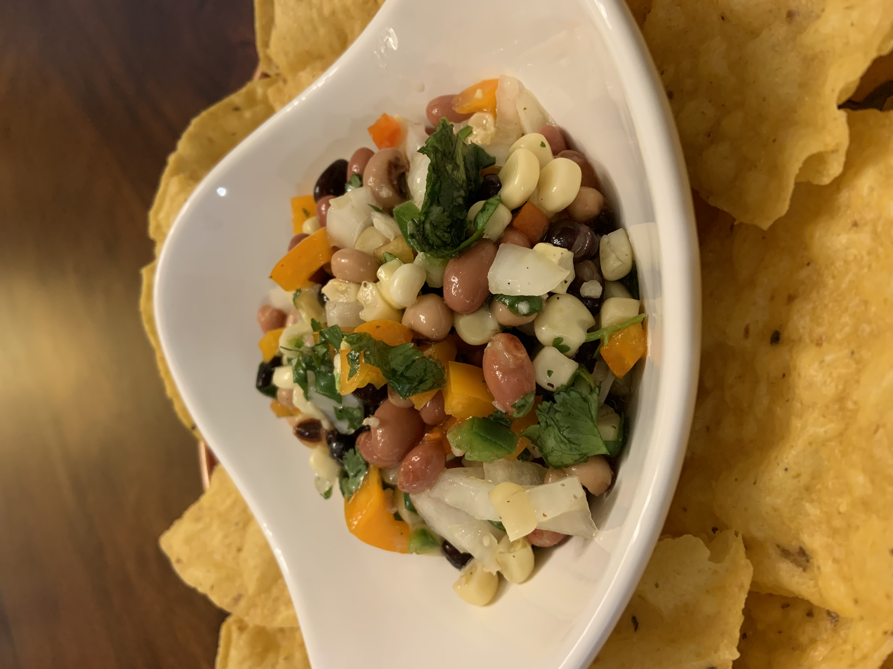

Starters | 12.04.20
The Tex-Mex starter you've been looking for!
My family and I have been enjoying this dip for years, thanks to our neighbor. With some slight tweeks to make it more our style, it has become a once a month starter that may even be at a holiday gathering. The dressing packs in a lot of flavor, and feel free to adjust the heat to your liking.
Main Ingredients:
2 15oz cans of White Corn
1 15oz can of Blackeyed Peas
1 15oz can of Pink or Pinto Beans
1 15oz can of Black Beans
1 4oz jar of chopped Pimentos
1 small White Onion
1 bunch of Cilantro
1 Green Bell Pepper
1 Red Bell Pepper
Dressing Ingredients:
3/4 cup of Apple Cider Vinegar
1/2 cup of Sugar
1/2 cup of Olive Oil
1 tbsp of Water
1 tsp of Salt
1 tsp of Black Pepper
4 tbsp of Lime Juice
2 tsp minced Garlic
1 Jalapeno
Instructions:
Drain and rinse the White Corn, Blackeyed Peas, Black Beans, and Pink or Pinto Beans.
Drain the chopped Pimentos.
Chop the White Onion, Cilantro, Green and Red Bell Peppers, and the Jalapeno.
In a large bowl put all of the ingredients listed under 'Main Ingredients' together, and set aside.
In a smaller bowl, mix all of the ingredients listed under 'Dressing Ingredients'.
Pour the mixed dressing over the ingredients in the larger bowl, and stir.
Cover the bowl and place in the refrigerator for 2-4 hours.
Serve with chips or as a side dish.

{kind=link}